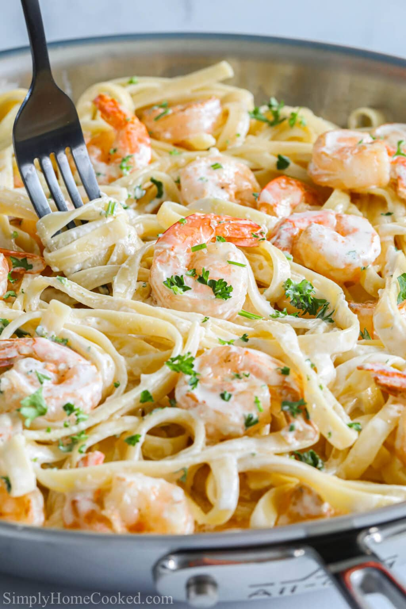

Pizza

Shrimp Alfredo Pasta
In a hurry but feeling the need for pasta?
This is one of my favorite dishes to make when i'm in the mood for seafood!
Ingredients
- 1 lb. shrimp
- salt
- black pepper
- 1 garlic clove
- 2 Tbsp. butter
- 2 Tbsp. olive oil
- 1 qt. heavy cream
- 1 cup grated Parmesean cheese
- 1 lb fettuccini pasta
Directions
- Season the shrimp. Sprinkle the raw shrimp with salt and pepper
- Cook the shrimp. Heat the oil in a skillet over medium-high heat and cook the shrimp on both sides for 7-8 minutes total, until they become pink and opaque. Take them out of the pan and set them aside in a bowl.
Return to recipes